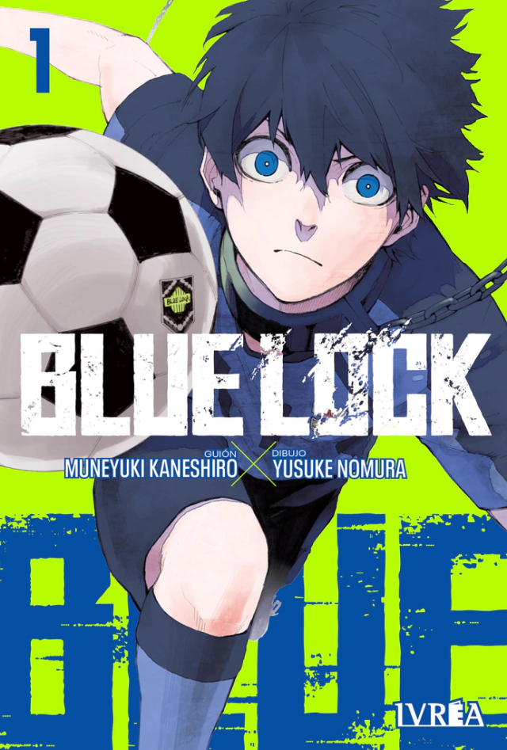

Blue Lock
Muneyuki Kaneshiro y Yusuke Nomura
$2500
Muneyuki Kaneshiro y Yusuke Nomura
$2500
Tatsuki Fujimoto
$2500

Takehiko Inoue
$4800
Gege Akutam
$2500
Eiichirō Oda
$2500
Tatsuya Endō
$2500
Bienvenido/a a nuestra guía para prinicipiantes
¿Querés hacer un regalo pero no entendés nada de mangas? Acá nomás te damos una mano. En el manga hay dos tipos de categorías reconocidas de diferenciación. Estas son:
| Género demográfico | Descripción |
|---|---|
| Shonen | Se trata de uno de los tipos de manga y anime más consumidos en Japón, dirigido a un público adolescente masculino. |
| Shojo | La protagonista de estas historias es una niña, que vive diferentes dramas durante su adolescencia hasta convertirse en una mujer. |
| Kodomo | Mangas dirigidos a un público infantil. |
| Seinen | Dirigidos a hombres mayores de edad, este tipo de historietas contiene mucha acción y aventura, con un contenido más violento e incluso algunos relatos eróticos y explícitos. |
| Josei | Dirigidos a mujeres adultas, entre los que se tratan temas relacionados con el romance, el drama, y también situaciones de acción y aventura. |
| Temática | Descripción |
|---|---|
| Nekketsu | El protagonista muestra valores como la amistad y la superación, a través de múltiples escenas de acción y violencia. |
| Spokon | Temática deportiva, en los que los personajes superan diferentes adversidades hasta llegar a lo más alto. |
| Romakome | Historias de comedia romántica centrada sobre todo para un público femenino. |
| Mecha | Cómics que cuentan las aventuras de robots gigantes, que en algunos casos van tripulados por personas. |
| Ciberpunk | Comics de carácter futurista en el que el mundo está regido por avances tecnológicos que determinan la jerarquía social. |
| Gore | De alta violencia gráfica, es un tipo de historia de terror en la que abunda la sangre y las escenas explícitas. |
"Trailer": dícese de la preview de las series inspiradas en los mangas más vendidos, para que te manijees y sigas las historias en todos los formatos. Te dejamos unos ejemplos a continuación:
Si te interesa algún manga que no encontrás en el catálogo, podés encargarlo haciendo click acá.¡Gracias por tu apoyo otaku!